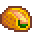

Receitas mais amadas (por NPC)
oferecer comidas que os NPCs amam, é a forma mais rápida de aumentar amizade com eles. Aqui temos um rank com as receitas mais amadas pelos NPCs
| Imagem | Nome | Ingredientes | NPCs que amam |
|---|---|---|---|

|
Bolo Rosa | Melão (1); Farinha de trigo (1); Açúcar (1); Ovo (1) | Haley, Jas, Vincent, Marnie |

|
Bolo de Chocolate | Farinha de trigo (1); Açúcar (1); Ovo (1) | Abigail , Evelyn, Jodi |
 |
Mexido de legumes | Tomate (1); Beterraba (1) | Jodi, Leah, Lewis |
|  | Tacos de Peixe | Tuna (1); Tortilha (1); Repolho roxo (1); Maionese (1) | Caroline, Gus |

|
Pizza | Farinha de trigo (1); Tomate (1); Queijo (1) | Shane, Sam |